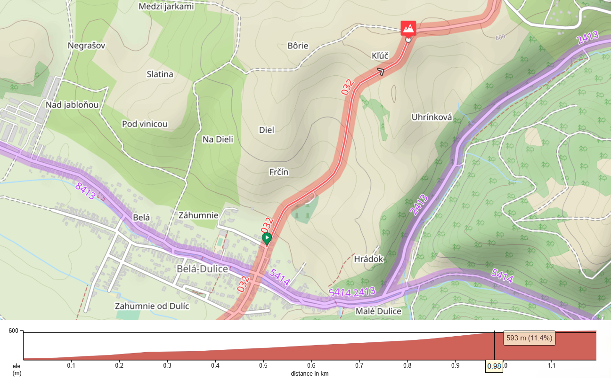

Nadchádzajúce etapy
Otestuj sa na rôznorodých stúpaniach v krásnej prírode Turca.
Čremošné
08.03.2025
Úvodné kolo pretekov nadchne všetkých, ktorí hľadajú poriadnu výzvu hneď na začiatku – asfaltový úsek s dĺžkou 3,1 km ponúka stúpanie s celkovým prevýšením až 211 metrov. V najstrmšom bode sa sklon trate šplhá na 11,4 %, čo preverí nielen tvoju kondičku, ale aj vôľu. Trasa začína za obcou Háj pri moste a končí na rázcestí nad Čremošným, kde na pretekárov čaká zaslúžené občerstvenie a výhľad.
Belá-Dulice
22.03.2025
Druhé kolo ťa zavedie do obce Belá-Dulice, známej svojou blízkosťou k Veľkej Fatre a výhľadmi, ktoré stoja za každý otočený pedál. Trasa vedie po Turčianskej cyklomagistrále a začína ešte v obci, tesne pred začiatkom strmého stúpania. Cieľ je umiestnený pri rozhľadni nad obcou, odkiaľ sa otvára panoramatický výhľad na okolie. Dĺžka 1,2 km s prevýšením 98 metrov a maximálnym sklonom 11,4 % robí z tohto kola ideálny test výbušnosti. Krátke, ale intenzívne stúpanie, kde rozhodujú každé sekundy aj taktika rozloženia síl.
Turček
05.04.2025
Tretie kolo ťa zavedie na zalesnené úbočia nad obcou Turček. Trasa s dĺžkou 5,0 km vedie cez pokojné lesy, pričom po náročnom úvode budete mať možnosť krátkeho zjazdu na vydýchnutie. No neteš sa priskoro – ďalší úsek prinesie stúpanie s maximálnym sklonom až 11,8 %. Celkové prevýšenie 235 metrov preverí tvoju vytrvalosť aj techniku. Povrch trate je prevažne asfaltový, miestami sa však vyskytujú drobné nerovnosti. Cieľ aj občerstvenie sa budú nachádzať presne v cieli – odmenou ti však aj bude ticho lesa a zaslúžený oddych.
Kláštor pod Znievom
19.04.2025
Predposledné kolo prinesie odľahčenie v podobe miernejšej trasy v Kláštore pod Znievom. Štartuje sa pri oddychovom altánku za rampou a cieľová čiara bude pri originálnej atrakcii – Mega bicykli. Trasa dlhá 2 km s prevýšením 77 metrov je ideálna pre tých, ktorí preferujú plynulé tempo pred extrémnymi stúpaniami. Najvyšší sklon 5,5 % sa nachádza v druhej polovici trate, takže si treba sily dobre rozložiť. Ideálna príležitosť pre oddych pred finále, ale aj pre tých, ktorí si chcú užiť atmosféru podujatia.
Martinské hole
03.05.2025
Záverečné kolo série je skutočnou kráľovskou etapou – výstup na Martinské hole. Trasa je dlhá 9,5 km, s celkovým prevýšením neuveriteľných 728 metrov. Sklon v najstrmšom úseku na treťom kilometri dosahuje až 14,9 %, čo z nej robí najnáročnejší výstup série. Štartovať sa bude vo Vrútkach pri rampe a cieľová čiara sa bude nachádzať pri parkovisku na Martinských holiach, kde bude pripravené aj občerstvenie a zaslúžený oddych po epickom výkone. Tento výšľap bude záverom, na ktorý sa nezabúda!